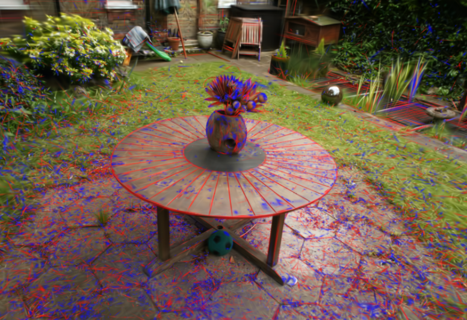
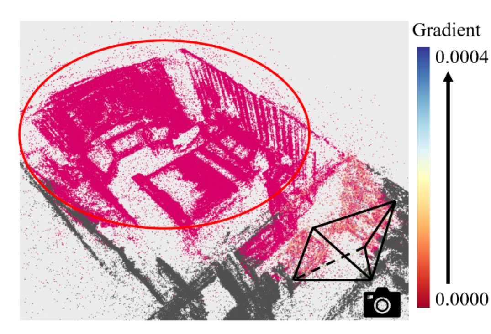

Computer vision · Computer graphics
Sheng-Chi Hsu (Ricky)
Research Assistant · NYCU, Taiwan
I'm Ricky, a research assistant at National Yang Ming Chiao Tung University (NYCU), advised by Professor Yu-Lun Liu. Previously, I completed my master's at National Tsing Hua University (NTHU), advised by Professor Hung-Kuo Chu.
I'm fascinated by how pixels are generated on screen and the algorithms and mathematics behind them. Outside research, I enjoy building real-time rendering and ray-tracing engines.
I'm currently actively seeking PhD opportunities, feal free to contact me for collaboration!
3D reconstructionNeural renderingDiffusion and flow models
Selected research
2024 — 2026
SIGGRAPH Asia 2024 · Technical communication
ODA-GS: Occlusion-and Distortion-aware Gaussian Splatting for Indoor Scene Reconstruction
Occlusion- and distortion-aware Gaussian splatting for reconstructing indoor scenes.
Let's connect
Get in touch to talk about computer vision, graphics, and rendering.
ricky610626@gapp.nthu.edu.tw ↗